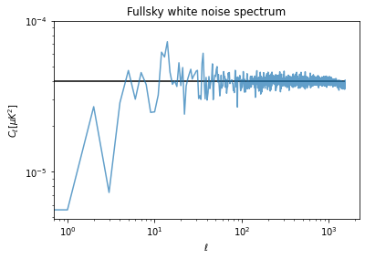

import healpy as hp
import numpy as np
%matplotlib inline
import matplotlib.pyplot as plt
import astropy.units as uIn this series of notebooks, we will understand how to handle white noise in the case of an experiment with sky observations which are both not-uniform and have partial sky coverage.
Let’s first start assuming a sensitivity of an experiment array of detectors of \(10 \mu K \sqrt(s)\).
# Number based on Simons Observatory SAT UHF1 array of detectors
net = 10. * u.Unit("uK * sqrt(s)")5 years with a efficiency of 20%:
integration_time_total = 5 * u.year * .2Uniform full sky survey
As a reference, let’s first start with the trivial case of uniform full sky coverage, i.e. we spend the same amount of observation time in each pixel.
nside = 512
npix = hp.nside2npix(nside)standard_deviation_per_pixel = (net / np.sqrt(integration_time_total/npix)).decompose()standard_deviation_per_pixel\(3.1572473 \times 10^{-6} \; \mathrm{K}\)
m = np.random.normal(scale = standard_deviation_per_pixel.value, size=npix) * standard_deviation_per_pixel.unitm = m.to(u.uK)hp.mollview(m, unit=m.unit, title="White noise map")
Power spectrum
Finally we can compute the angular power spectrum with anafast, i.e. the power as a function of the angular scales, from low \(\ell\) values for large angular scales, to high \(\ell\) values for small angular scales.
At low \(\ell\) there is not much statistics and the power spectrum is biased, but if we exclude lower ells, we can have an estimate of the white noise \(C_\ell\) coefficients. We can then compare with the theoretical power computed as:
\[ C_\ell = \Omega_{pix}\sigma^2 \]
Where: \(\Omega_{pix}\) is the pixel are in square-radians and \(\sigma^2\) is the white noise variance.
cl = hp.anafast(m)cl[100:].mean()3.9283892627207396e-05m.std()\(3.1567443 \; \mathrm{\mu K}\)
pixel_area = hp.nside2pixarea(nside)white_noise_cl = (standard_deviation_per_pixel**2 * pixel_area).to(u.uK**2)white_noise_cl\(3.9820426 \times 10^{-5} \; \mathrm{\mu K^{2}}\)
plt.figure(figsize=(6,4))
plt.loglog(cl, label="Map power spectrum", alpha=.7)
plt.hlines(white_noise_cl.value, 0, len(cl), label="White noise level")
plt.title("Fullsky white noise spectrum")
plt.xlabel("$\ell$")
plt.ylabel("$C_\ell [\mu K ^ 2]$");